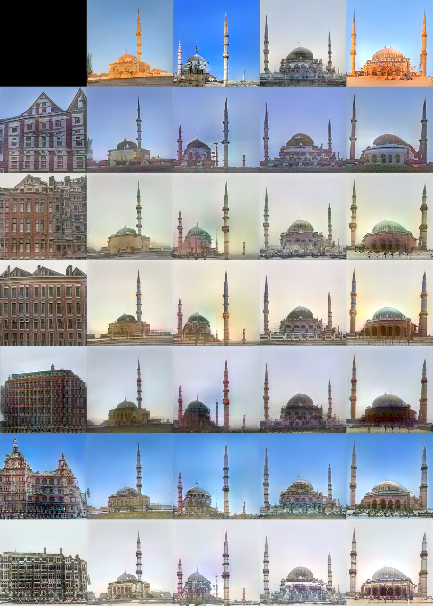

Motivation: Find architectures with mixed styles
Westermosque is a building in Amsterdam that incorporates an architecture similar to mosques in Sultanahmet with the typical aesthetic of Amsterdam. Inspired by this perfect example of style-mix, deep learning techniques are applied to generate images
of such style-mixed buildings. First, neural style transfer is feeded with mosque-content and Amsterdam-style. In the second part, a generative adversarial network is trained with scraped building data of houses, churches, mosques and castles.

Neural Style Transfer
Some results of neural style transfer are shown below. The content is a picture of the blue mosque in Istanbul, as style several different images of Amsterdam's walls were used. To get prettier results, a mask generated by segmentation of the content image
is applied to the result. A pretrained (on Imagenet) VGG16 network was used.

Generative Adversarial Networks (GANs)
A more sophisticated way to mix style is via a Generative Adversarial Network. Since GANs do not have a properly controllable latent space to explore between two images, StyleGAN is our best bet.
StyleGAN has some improvements over the basic GAN architecture, with the most relevant for our use-case being the fact that the generator gets the latent vector as an input not once but several times.
Each input controls some level of granularity of the generated image's structure. The useful consequence: feeding two different latent vectors to higher and lower granularity layers mixes the styles.
StyleGAN2-ada
This project uses StyleGAN2 with adaptive discriminator augmentation. This is a fruitful augmentation technique, which allows the same success with only 10% of the original data.
The images used as training input were scraped via the flickr-API under several key words, such as 'house', 'castle', 'palace', 'church' and 'mosque'.
Some examples of generated images with a Fréchet inception distance of roughly 15 trained on 2000+ images:

There are two ways to find style mixes corresponding to Westermosque-style. The first on is finding seeds corresponding to Amsterdam-style as well as mosque-style and mixing them. The results are shown below.

The second way: take images of mosques and Amsterdam, find their representation in the latent space and mix their styles. This technique has less pretty results, mainly due to imperfect approximations of latent representations. The example images are shown below.

Independently of style-mixing, some of the results of the produced images by itsself have some inspirational aspects in regard of building-mixing as well.